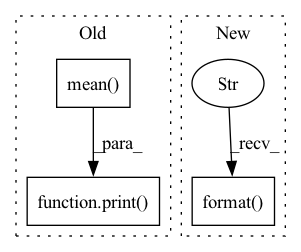

Pattern ID :33751

Before Change
print("\r Epoch [%d/%d] train loss: %.4f test loss: %.4f, average score: %.4f, auc_LUAD: %.4f, auc_LUSC: %.4f" %
(epoch, args.num_epochs, train_loss_bag, test_loss_bag, avg_score, aucs[0], aucs[1]))
else:
print("\r Epoch [%d/%d] train loss: %.4f test loss: %.4f, average score: %.4f, average_AUC: %.4f" %
(epoch, args.num_epochs, train_loss_bag, test_loss_bag, avg_score, np.mean(aucs)))
scheduler.step()
current_score = (aucs[0] + aucs[1] + avg_score + 1 - test_loss_bag)/4
if current_score >= best_score:
best_score = current_score
After Change
print("Best model saved at: " + save_name + " Best thresholds: LUAD %.4f, LUSC %.4f" % (thresholds_optimal[0], thresholds_optimal[1]))
else:
print("Best model saved at: " + save_name)
print("\n Best thresholds >>> "+ " | ".join("class {}:{}".format(*k) for k in enumerate(thresholds_optimal)))
if __name__ == "__main__":
In pattern: SUPERPATTERN
Frequency: 3
Non-data size: 3
Instances
Fragment ID: 96990151
Project Name: binli123/dsmil-wsi
Commit Name: dba72e846aabeafa26e097972c389ab0f1776608
Time: 2021-06-18
Author: bli346@wisc.edu
File Name: train_tcga.py
M Class Name: AnonimousClass
N Class Name: AnonimousClass
M Method Name: main(0)
N Method Name: main(0)
M Parent Class:
N Parent Class:
M File Name: train_tcga.py
N File Name: train_tcga.py
M Start Line: 154
M End Line: 170
N Start Line: 153
N End Line: 169
'>
Before Change
episode_duration = episode_end_time - episode_start_time
episode_durations.append(episode_duration)
time_remaining_str = second_to_time_str(int((self.max_episode - episode + 1) * np.mean(episode_durations[-100:])))
print("episode {}: return {:.02f} eta: {}".format(episode, np.mean(train_traj_rewards[-2:]), time_remaining_str))
def test(self):
After Change
self.logger.log_var("return/test", avg_test_reward, tot_num_updates)
self.logger.log_var("return/test_length", avg_test_length, tot_num_updates)
time_remaining_str = second_to_time_str(int((self.max_episode - episode + 1) * np.mean(episode_durations[-100:])))
summary_str = "episode {}:\ttrain return {:.02f}\ttest return {:02f}\teta: {}".format(episode, train_traj_rewards[-1],avg_test_reward,time_remaining_str)
self.logger.log_str(summary_str)
def test(self):
'>
Fragment ID: 96990150
Project Name: x35f/unstable_baselines
Commit Name: f1130dd5b7d2ad9a72c189ccf63bd0a249c5e9c1
Time: 2021-03-10
Author: 1621322691@qq.com
File Name: sac/trainer.py
M Class Name: SACTrainer
N Class Name: SACTrainer
M Method Name: train(1)
N Method Name: train(1)
M Parent Class: BaseTrainer
N Parent Class: BaseTrainer
M File Name: sac/trainer.py
N File Name: sac/trainer.py
M Start Line: 26
M End Line: 73
N Start Line: 35
N End Line: 86
'>
Before Change
n_edits += errors
n += len(target)
print("Cur WER: {}".format(wers[-1]))
print("WER:", np.mean(wers))
df = pd.DataFrame(scores)
print("Mean WAcc for the files is ", np.mean(df["wacc"]))
After Change
scores.append({"file_name": os.path.basename(fpath), "wacc": wer})
n_edits += errors
n += len(target)
print("Progress {:2.1f} % | Cur WER: {:.1f} %".format(progress, wer * 100))
df = pd.DataFrame(scores)
print("WER:", n_edits / n)
'>
Fragment ID: 96990149
Project Name: rikorose/deepfilternet
Commit Name: 15488ca668ecdb2f59a980d2ac2c998efce659a0
Time: 2022-12-20
Author: h.schroeter@pm.me
File Name: scripts/WAcc_whisper.py
M Class Name: AnonimousClass
N Class Name: AnonimousClass
M Method Name: main(1)
N Method Name: main(1)
M Parent Class:
N Parent Class:
M File Name: scripts/WAcc_whisper.py
N File Name: scripts/WAcc_whisper.py
M Start Line: 28
M End Line: 53
N Start Line: 29
N End Line: 60